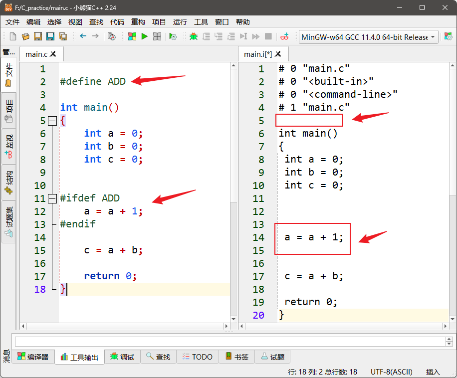
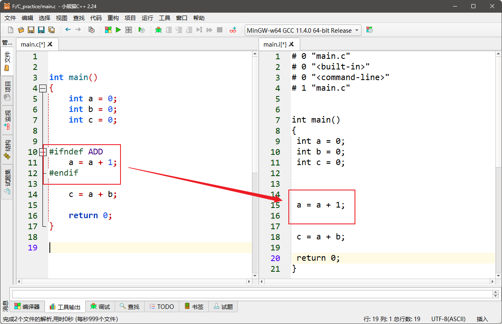
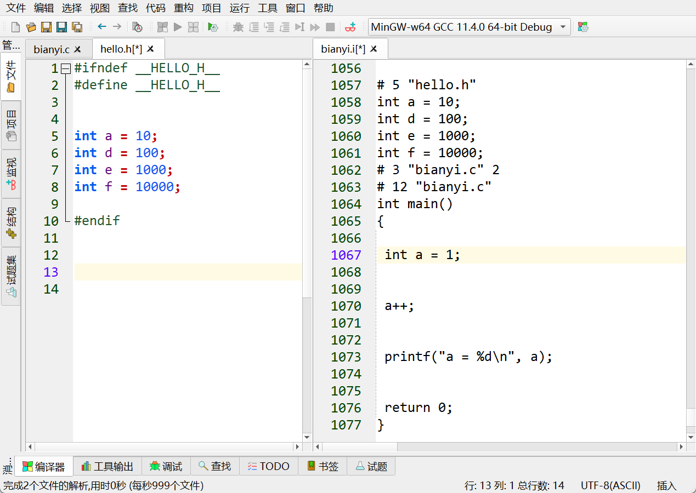
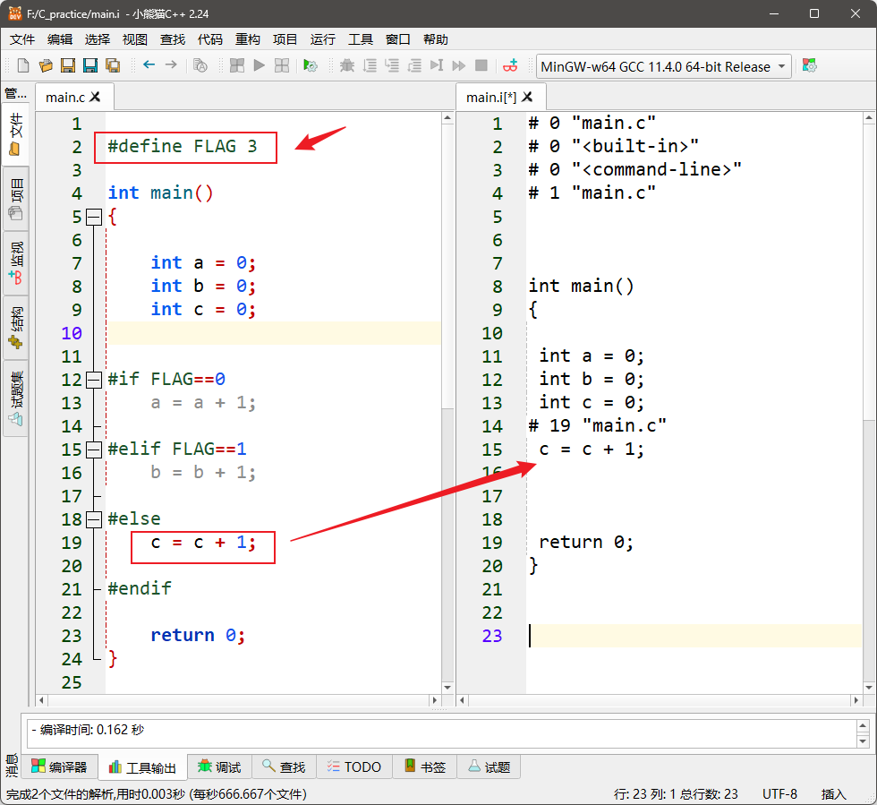
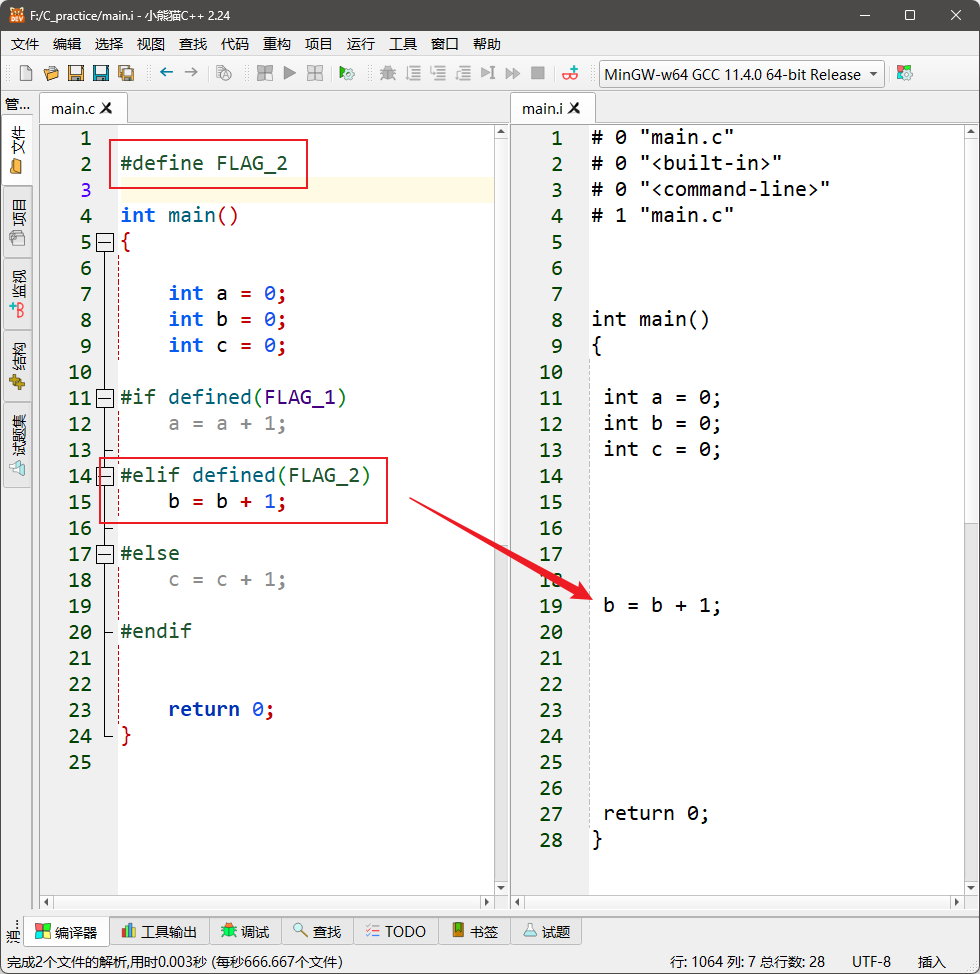

<!DOCTYPE lake>
<a class="yuque-card-link" href="https://cdn.nlark.com/yuque/0/2025/jpeg/27903758/1750996009721-e56b8dd4-de8a-4d2c-8686-3f7e0843d719.jpeg" rel="noopener noreferrer" target="_blank">board：board</a><h1 data-lake-id="hfput" id="hfput"><span data-lake-id="u9653bdde" id="u9653bdde">1&gt; #ifdef </span></h1><span class="yuque-card-unsupported">[codeblock]</span><p data-lake-id="ua091b82c" id="ua091b82c"><span data-lake-id="u88380b54" id="u88380b54">当定义了ADD宏时，a=a+1；语句会被编译，</span></p><p data-lake-id="u3375efab" id="u3375efab"><span data-lake-id="u347c21e1" id="u347c21e1">否则这部分代码直接替换为空格，不会被编译；</span></p><p data-lake-id="u500cf21f" id="u500cf21f"></p><hr/><h1 data-lake-id="W8zG9" id="W8zG9"><span data-lake-id="u58598a96" id="u58598a96">2&gt; #ifndef</span></h1><p data-lake-id="ufdb1f755" id="ufdb1f755"><span data-lake-id="ubd2be7aa" id="ubd2be7aa">#ifndef 与 #ifdef 正好相反，</span></p><p data-lake-id="u00f0286b" id="u00f0286b"><span data-lake-id="u2f63417b" id="u2f63417b">如果宏ADD</span><strong><span data-lake-id="u382e8649" id="u382e8649" style="color: #DF2A3F">未定义</span></strong><span data-lake-id="u194f1460" id="u194f1460">则编译 a=a+1;语句, </span></p><p data-lake-id="u2e812b4b" id="u2e812b4b"><span data-lake-id="u3b28fbb8" id="u3b28fbb8">如果</span><strong><span data-lake-id="ucc5f48d7" id="ucc5f48d7" style="color: #DF2A3F">定义了</span></strong><span data-lake-id="u145fd73f" id="u145fd73f">宏ADD则不编译 a=a+1;语句, </span></p><p data-lake-id="ub9b57679" id="ub9b57679"></p><hr/><p data-lake-id="u0a8faab9" id="u0a8faab9"><span data-lake-id="u1b066790" id="u1b066790">头文件：防重复包含</span></p><p data-lake-id="ueb27ac4f" id="ueb27ac4f"></p><hr/><h1 data-lake-id="FzV6L" id="FzV6L"><span data-lake-id="u6a5a23f3" id="u6a5a23f3">3&gt; #if - #elif - #else</span></h1><span class="yuque-card-unsupported">[codeblock]</span><p data-lake-id="u1a2385f6" id="u1a2385f6"><span data-lake-id="uaf0dc1d1" id="uaf0dc1d1">#if - #elif - #else根据常量表达式的值进行条件编译；</span></p><p data-lake-id="ubf816eb3" id="ubf816eb3"></p><p data-lake-id="ueb28f7c8" id="ueb28f7c8"><br/></p><span class="yuque-card-unsupported">[codeblock]</span><hr/><h1 data-lake-id="WIMNk" id="WIMNk"><span data-lake-id="ufccb59d7" id="ufccb59d7">4&gt; #if defined( )</span></h1><p data-lake-id="u04cb12e3" id="u04cb12e3"><code data-lake-id="u26f07a18" id="u26f07a18"><span data-lake-id="u2a1eb8d0" id="u2a1eb8d0">#if defined()</span></code><span class="lake-fontsize-12" data-lake-id="uda4132e3" id="uda4132e3"> 是 C 预处理器中的一个指令，用于检查某个宏是否被定义。</span></p><p data-lake-id="uf7fdc52a" id="uf7fdc52a"><span class="lake-fontsize-12" data-lake-id="u0f823b35" id="u0f823b35">如果该宏被定义了，那么 </span><code data-lake-id="u8187ca7b" id="u8187ca7b"><span data-lake-id="ud8a1714b" id="ud8a1714b">#if defined()</span></code><span class="lake-fontsize-12" data-lake-id="u9d604ae9" id="u9d604ae9"> 块中的代码会被包含在编译中；</span></p><p data-lake-id="u3d569729" id="u3d569729"><span class="lake-fontsize-12" data-lake-id="u2cfd4b60" id="u2cfd4b60">否则，这部分代码会被忽略。</span></p><span class="yuque-card-unsupported">[codeblock]</span><p data-lake-id="u92f316b1" id="u92f316b1"></p><p data-lake-id="u81cee28b" id="u81cee28b"><br/></p><span class="yuque-card-unsupported">[codeblock]</span><p data-lake-id="u6c029d74" id="u6c029d74"><span data-lake-id="u5957e588" id="u5957e588">​</span><br/></p><span class="yuque-card-unsupported">[codeblock]</span>